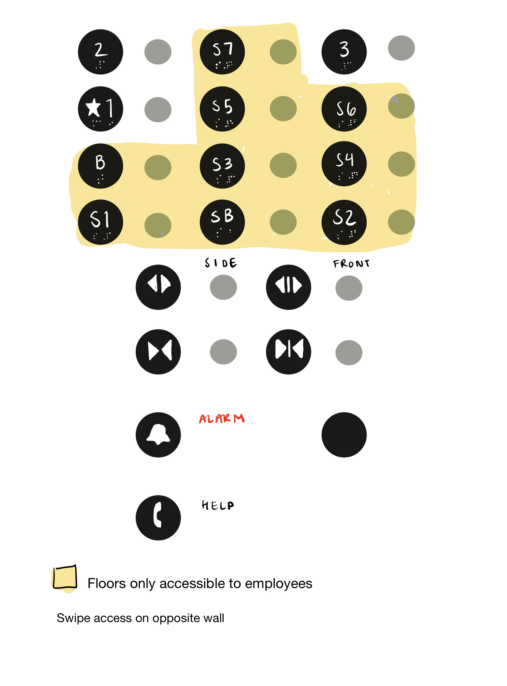
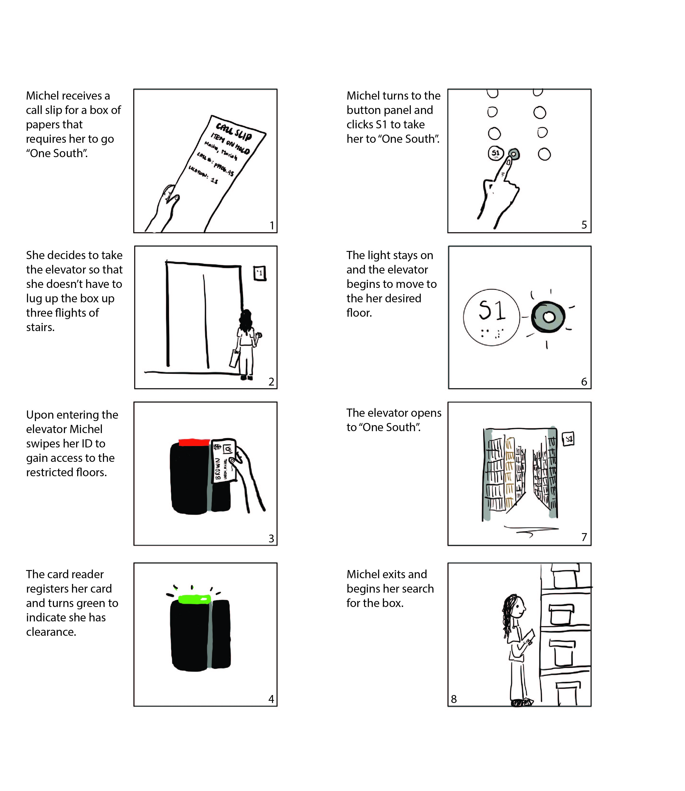

John Hay Library Elevator Interface
The John Hay Library is a special collections library on Brown's campus. The building has an elevator that is shared by employees of the library and the general public. Floors accessible to the public and students are 1, 2, 3. The rest of the floors are only accessible to employees. The elevator has two doors as two sides of the building have differing heights. The interface's goal is to accommodate both employees and the public to navigate through floors of the library.
A sketch of the elevator's interface
Questions
1. Why/When do you use the elevator?
2. What do you like about the elevator?
3. What are the most important buttons on the elevator?
4. What do you dislike about the elevator? Is this something worth changing?
- The main use of the elevator for both patrons and employees is to avoid the stairs or to help with heavy objects. Employees use it daily whereas the patron has only used it once.
- People liked the accessibility they had to floors of the library and the double door feature.
- The most useful buttons seemed to be whatever floors any person was trying to get to or frequently used.
- People generally disliked the organization of the buttons with both patrons and employees struggling to find their desired button.
- Everyone decided the order of the buttons was something that was worth changing.
Observations
- Swipe access takes time to register, not always successful.
- Traffic from both patrons and employees.
- Take's Arrington a long time to locate 3rd floor.
- Worker clicks wrong floor by mistake. They are similar.
2 Personas
A persona for Michel, an employee at the Hay.
A persona for Arrington, a patron at the Hay.
Stoyboard
A storyboard detailing Michel's experience with the elevator interface.